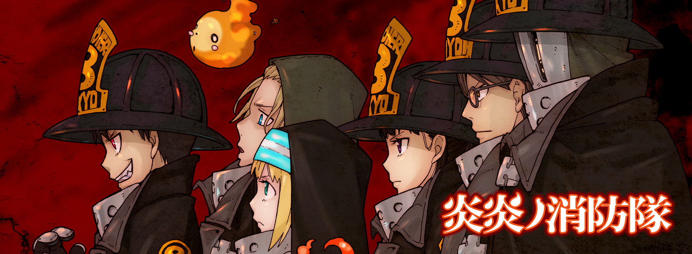
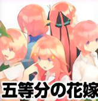
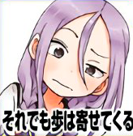
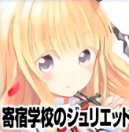
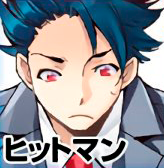
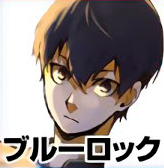
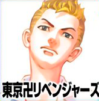

This week's Weekly Shonen Magazine posting order & comments from the author.


Days

I played futsal (indoor football) after a long time and ended up with an injury with my flesh away. My mind went completely blank...
Go-Toubun no Hanayome

I will try my best to live until 'The Legend of Zelda: Breath of the Wild's sequel comes out.
Soredemo Ayumu wa Yosetekuru

I have been eating a lot of boiled eggs recently.
Runway de Waratte

Mr. Tanto is surprisingly good at singing.
Sen wa boku wo Egaku

I bought a Momorurugyaban album. On Amazon. (Horiuchi).
The Seven Deadly Sins

I went to the live concert of Yuki Kajiura. MP has completely recovered.
Bakemonogatari

The 'Bakemonogatari' exhibition will end in a few days. Thank you so much for everyone who visited. If you still have the chance to go there, please do it! (Oh Great!).
Diamond no Ace act II

My staff has been drinking tapioca drinks for a while now.
Kanojo, Okarishimasu
When I drink cider with paper cups, I remember local public hall parties and events.
Boarding School Juliet

Kocho Wan and Teria Wan figurines are on sale. They are mega cute!!
Hitman

I have been using the same pillow with memory foam for 10 years already and it has become a bit flimsy, so I bought a new one. Now I can sleep well.
Mako-san wa Shindemo Jiritsu Shinai

I like the hot and sour flavour of the delicious spicy garlic that you can add to CoCo ICHI curry... But the bill has increased again... (Lol).
Edens Zero
I want to watch that old Jack movie after a long time and watch it from the other end.
Blue Lock

I liked the reveal announcement of Smash Bros. Ultimate showing Banjo & Kazooie joining the battle.
Tokyo Revengers

I spent two nights at Hakone. Short trips like this need to be enjoyed completely. And also eat a lot.
Seitokai Yakuindomo

Is it july already? I am really feeling it.
Hajime no Ippo

I have been taking photographs recently for certain reasons
Senryuu Girl

The 10th volume will be released on 17th this month.
Shichiha Gojuroku

Thank you to all the readers that have supported us with letters and comments! And thank you very much for making us reach Volume 3 and 4! (Sasako).
Shinanaide Azukawa-san

I am watching an old drama.
Danshi Kokosei wo Yashinaitai
I really want to lose weight!
Fumetsu no Anata e
I made red pepper juice for the first time this year.
Tsuki no Kuni

I am drinking a delicious shiso juice.
Fire Force
Atsushi Ookubo
The anime will start on 7th July! I will be on LA at an animation event, so I am going to be there with my American fans! First episode, opening and ending are really good so please look forward to it!